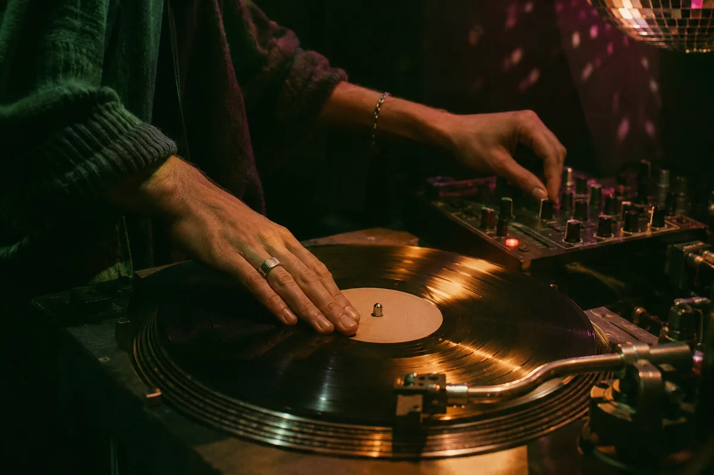

From the floor, you hear one record. Lean into the booth and there are two. One is already moving the room. The other lives in the headphones, turning over the same few bars while the DJ waits.
A fingertip nudges the platter. A kick drum finds its twin. For a few seconds the records share a bass line, and it gets hard to say where one ends. Then the old track slips away and the room is somewhere else.
Back to posts